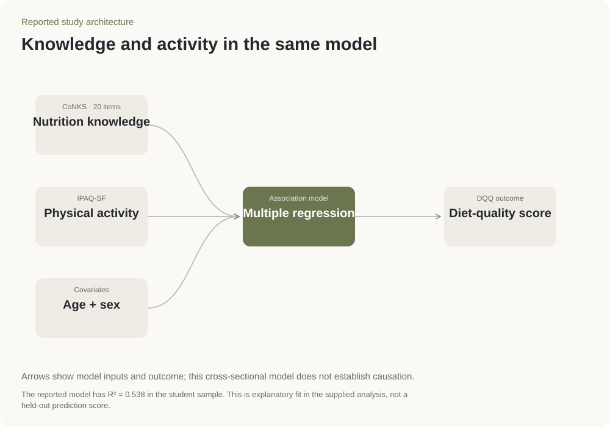

Student nutrition · Vietnam
Student diet quality
Survey analysisNutrition researchComparing dietary patterns
- Sample
- 280 students
- Measures
- Food knowledge, activity + diet
- Design
- One-time survey
Key result
Calorie knowledge lagged
Dietary guidance scored higher.
Basic food advice was better understood than calories.
Knowledge scores · food groups · diet associations.
Nutrition knowledge
7 items · mean 6 / 7
SD 1.06
7 items · mean 4.88 / 7
SD 1.54
6 items · mean 2.77 / 6
SD 1.61
Three knowledge domains
Calories has the lowest percentage of correct answers. Each domain retains its own item count, rather than being treated as an equally weighted score.
Dietary patterns
SD 1.8
More food-group diversity
SD 1.9
More protective food groups
SD 2.6
More groups to limit; higher is not healthier
Different dietary scores
Each mean is shown against its own maximum. The foods-to-limit score counts groups to limit, so a higher value does not indicate a healthier diet.
What was linked with diet quality
Diet-quality model
280 students
- Ageper year
- 0.1284CI 0.04 to 0.217
p 0.005 - Sexmale = 1
- -0.0129CI -0.364 to 0.338
p 0.942 - Knowledgeper knowledge-score point
- 0.1102CI 0.022 to 0.198
p 0.014 - Physical activityper MET-minute / week
- 0.0029CI 0.003 to 0.003
p < 0.001
Adjusted association
Age and knowledge have positive printed intervals. Sex crosses zero. Activity uses a much smaller measurement unit, so raw coefficients should not be ranked as relative importance.
Estimates & units
| Predictor | Unit | Coefficient | Printed 95% CI | p |
|---|---|---|---|---|
| Age | per year | 0.1284 | 0.04 to 0.217 | 0.005 |
| Sex | male = 1 | -0.0129 | -0.364 to 0.338 | 0.942 |
| Knowledge | per knowledge-score point | 0.1102 | 0.022 to 0.198 | 0.014 |
| Physical activity | per MET-minute / week | 0.0029 | 0.003 to 0.003 | < 0.001 |
FCBEM paper: Table 2 (knowledge), Table 3 (diet) and Table 5 (regression); n = 280.
Methods & tools

Source & status
FCBEM 2025 proceedings-linked paper